地政学
サンノゼは湾南端のサンタクララ谷にあり、太平洋岸、大学、軍需研究、半導体産業、移民の回路を結びます。州都ではありませんが、技術企業の意思決定が通信、労働、金融、安全保障へ届く湾岸の重要な要地です。

🇺🇸 アメリカ合衆国 / 北米 / World City Atlas
サンタクララ谷に広がるシリコンバレー最大の都市です。半導体とソフトウェア、移民地区、果樹園の記憶、住宅費の圧力、郊外化した交通、乾いた気候と水の制約が重なる都市です。
都市の骨格
サンノゼは巨大な摩天楼都市ではなく、谷、幹線道路、住宅地、大学、研究所、工場跡、小売拠点が広がる都市です。高い所得と住宅難、国際的な人材と日常のサービス労働が近い距離で交差します。
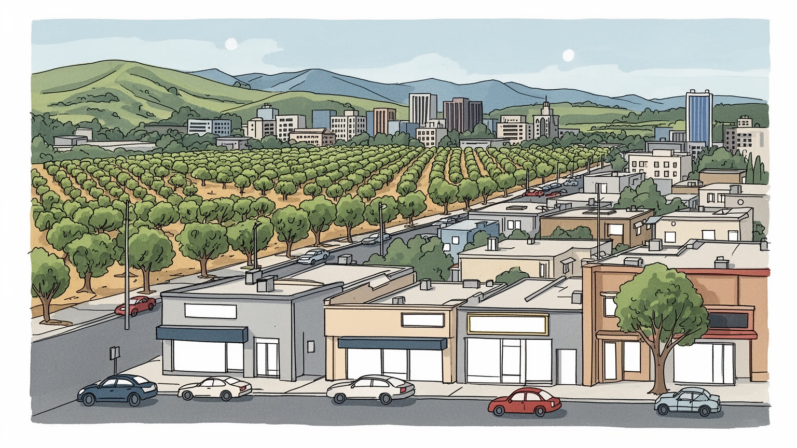
サンノゼは湾南端のサンタクララ谷にあり、太平洋岸、大学、軍需研究、半導体産業、移民の回路を結びます。州都ではありませんが、技術企業の意思決定が通信、労働、金融、安全保障へ届く湾岸の重要な要地です。
半導体、ソフトウェア、通信機器、医療、小売、教育、建設が雇用を作ります。高給技術職が目立つ一方、清掃、配達、介護、飲食、警備、保育、倉庫の仕事が都市を支え、住宅費の高さが働く場所と住む場所を引き離します。
メキシコ系、ベトナム系、インド系、中国系、フィリピン系などの食堂、寺院、教会、祭りが街を形づくります。カトリック、仏教、福音派、TetやCinco de Mayo、学校行事、地域紙、ラジオ、SNS、夜の音楽が家族と買い物の通りを支えます。
市場、博物館、庭園、SharksやEarthquakesの試合、丘陵の公園、湾岸湿地は訪問者に開かれます。住民には家賃、長距離通勤、車依存、水不足、教育格差、子どもや高齢者の移動、夜の足、買い物、通院、学校帰りの安全こそ切実です。
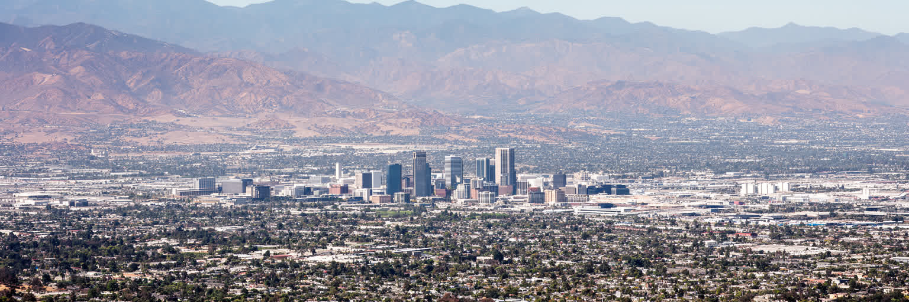
サンノゼはサンタクララ谷の南寄りに広がり、東西を山地に囲まれ、北へ進むとサンフランシスコ湾の湿地と技術企業の集積へつながります。地図で見ると大都市の中心というより、低い住宅地、幹線道路、研究所、大学、ショッピングセンター、倉庫、空港が谷底に連なる広い都市です。谷は温暖で乾き、かつて果樹園や缶詰工場が並びますが、戦後の郊外開発と半導体産業が土地利用を大きく変えました。山並みは美しい背景であり、同時に市街地の拡張、山火事、通勤路、水源管理を制約する境界でもあります。湾南端の湿地は洪水、海面上昇、生態系保護と関わり、都市の北側ではオフィスと自然保全が近接します。サンノゼを読むには、都心の建物だけでなく、谷全体に広がる移動距離、住宅地の密度、乾いた小川、山裾の公園、空港の騒音、郊外の学校区を同じ地形の上に置く必要があります。谷の広さは経済成長を受け止めたが、車依存と住宅不足も増幅しました。見晴らしのよい山と穏やかな空は都市の魅力を作る一方、土地と水の限界を静かに示しています。地形は地域の分断も映します。西側や山裾の住宅地、東側の労働者地区、北へ伸びる企業集積は同じ谷にありながら、通勤時間、学校、緑地、住宅価格で違う日常を持ちます。平坦に見える市街地ほど、その差は道路一本の向こうに現れます。その距離感が、生活の費用を左右します。
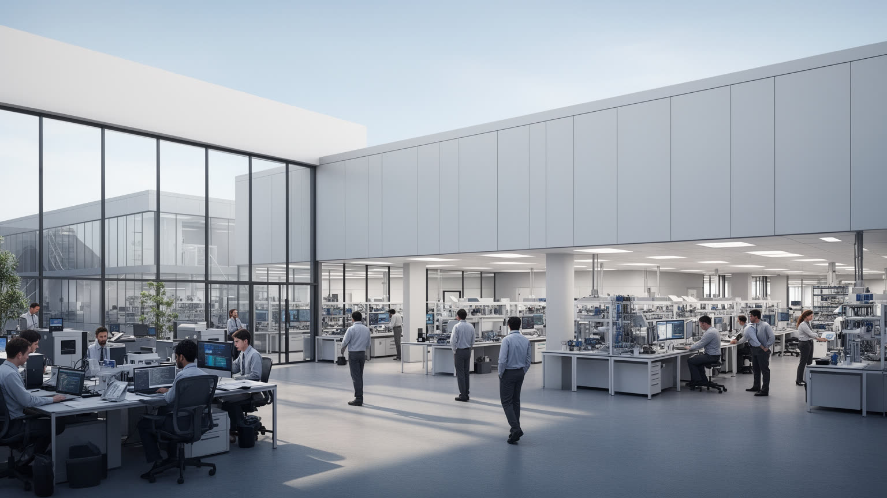
サンノゼの経済は、シリコンバレーという名前の中心にあります。半導体、通信機器、ソフトウェア、クラウド、サイバーセキュリティ、医療機器、ベンチャー投資、特許事務、設計支援が、都市圏の仕事と地価を押し上げてきました。かつての工場や果樹加工の土地は、研究開発施設、オフィスパーク、データ関連施設、集合住宅へ変わりました。高い給与を得る技術者や経営者は世界から集まりますが、都市の毎日は清掃、警備、カフェ、保育、介護、配送、建設、倉庫、学校職員によって支えられます。技術産業は在宅勤務や株価の変動に敏感で、採用の急増と人員整理が住宅市場や小売にも波及します。半導体の供給網は台湾、韓国、日本、中国、東南アジア、欧州と結び、都市のオフィスで決まる設計や資本配分が国際政治にも関わります。サンノゼを技術都市として見るなら、華やかな創業神話だけでなく、試作品を作る工場、移民技術者のビザ、下請けの仕事、保育の不足、深夜に配送する人の時間まで読む必要があります。知識経済の富は厚いが、それを支える生活基盤が高すぎる時、都市の競争力そのものも揺らぎます。企業キャンパスの食堂や送迎バスは便利さを作る一方、周辺の小店、公共交通、街路のにぎわいを弱めることもあります。San Pedro Square Marketの昼食客、SAP Centerの試合帰り、地域メディアやSNSの求人情報まで含めて、産業の強さを公共の街へ開けるかが問われます。
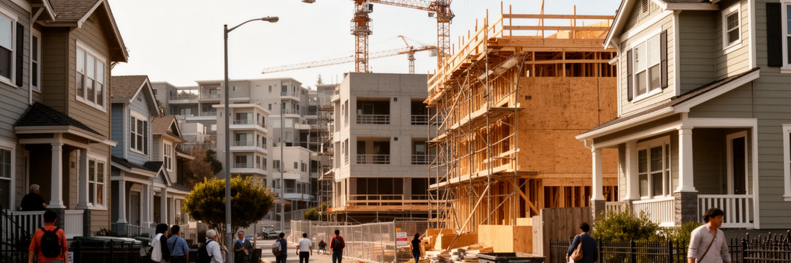
サンノゼの最大の社会問題は、豊かな技術経済の足元で住宅が手の届きにくいものになったことです。戸建て中心の地区、厳しい土地利用規制、急増する高所得者、投資資金、建設費の高さが重なり、賃貸も持ち家も多くの世帯に重い負担となりました。技術職の収入でも購入が難しい一方、教員、看護補助、介護、飲食、清掃、保育、公共職員、学生、若い家族はさらに厳しい選択を迫られます。家賃を抑えるために遠い郊外へ移れば、通勤時間、燃料費、育児の送り迎えが増えます。過密な住まいを選ぶ移民世帯や、車上生活に近づく人もいます。住宅価格の上昇は固定資産税、相続、地域の商店、学校の人材確保にも影響します。新しい集合住宅は必要ですが、家賃が高すぎれば問題は解決しません。低所得住宅、交通沿線の密度、既存住民の保護、ホームレス支援、家族向け住宅、学生住宅を一体で考える必要があります。サンノゼでは、家は単なる不動産ではなく、技術都市が誰の生活を受け入れるのかを問う尺度です。高い給与と高い家賃が同時に語られる時、その間で都市を動かす労働者の居場所が見えにくくなります。住居の不安は健康、学習、職場定着にも及びます。頻繁な転居は子どもの学校生活を乱し、長い通勤は家族の時間を削ります。住宅政策は福祉ではなく、都市の産業と共同体を支える基盤です。通勤圏全体に広がる問題です。
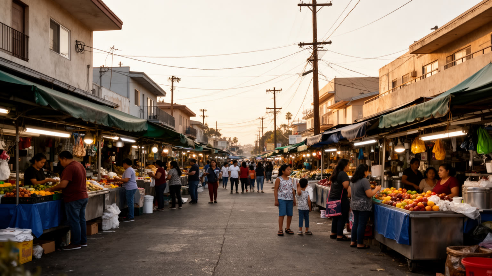
サンノゼの都市文化は、移民の生活圏を抜きに理解できません。メキシコ系や中米系の家庭、ベトナム系コミュニティ、インド系、中国系、フィリピン系、韓国系、イラン系、アフリカ系の住民が、食堂、市場、寺院、教会、語学学校、送金窓口、美容室、法律事務所を通じて街を作っています。ベトナム系の商業地区では麺料理、菓子、仏教寺院、旧正月の行事が日常に根づき、東側や南側のラテン系地区ではカトリックの祭り、タコス店、家族経営の店、労働者のネットワークが見えます。技術企業の国際的な人材も移民都市性の一部ですが、同じ移住でもビザ、所得、英語、資格、住宅の条件は大きく違います。移民は半導体設計から清掃、建設、介護、飲食、保育まで幅広く都市を支え、家族と地域の助け合いで高い生活費に向き合います。学校の多言語支援、医療通訳、移民法相談、賃貸契約の知識、地域新聞、ラジオ、SNSの案内は、都市参加の具体的な入口になります。サンノゼの多文化性は抽象的な多様性ではなく、通りの看板、礼拝の時間、食材の配送、親族の送金、子どもの進学に現れる生活の制度です。移民地区が残れるかは、文化の魅力だけでなく家賃と商店の継続にかかっています。次の世代が学校、起業、地域政治で声を持つほど、街の自己像も広がります。移民地区は過去の保存物ではなく、都市の未来を作る現場です。市場の香り、寺院の鐘、夜の屋台、家族の買い物が生活の地図になります。
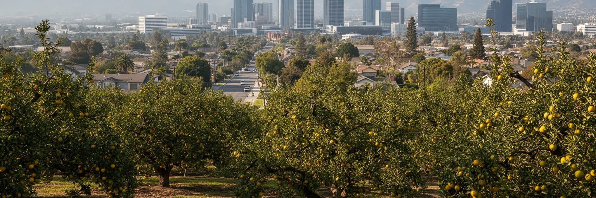
サンタクララ谷は、かつて果樹園の谷として知られました。アンズ、プラム、チェリー、ナシ、クルミの畑、缶詰工場、鉄道、移民農業労働者、家族経営の農場が地域経済を支えていました。現在のサンノゼを歩くと、その記憶は地名、古い倉庫、保存された果樹、博物館、郊外の区画、家族の写真の中に残ります。技術産業への転換は、単に農地がオフィスに変わったという話ではありません。農業労働の低賃金、土地所有、日系やメキシコ系など移民の歴史、戦時中の排除、戦後の住宅開発、軍需研究、大学教育が複雑に重なって、現在のシリコンバレーが作られました。果樹園の消失は豊かさの物語であると同時に、土壌、水、季節労働、地域の記憶が見えにくくなる過程でもありました。保存された歴史施設だけを見ても足りません。住宅地の曲がり方、古い水路、工場跡の再開発、家族が語る収穫期の記憶に、技術都市の前史が残っています。サンノゼを読むには、最新の半導体やソフトウェアの背後に、土地を耕し、果物を詰め、鉄道で運んだ人びとの都市を重ねる必要があります。果樹園の谷は消えたのではなく、都市の地層として今も暮らしの下にあります。その記憶は環境を考える手がかりにもなります。水をどう使い、土をどう残し、農業労働をどう語るかは、技術都市の未来にも関わる問いです。その記憶は、都市の想像力を静かに広げています。
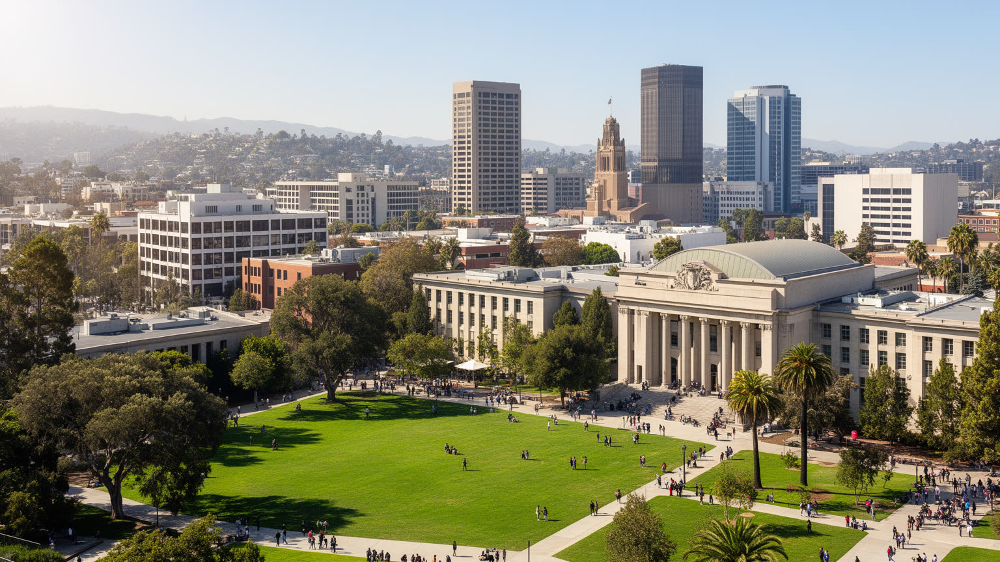
サンノゼ州立大学は、都市の中心部にある実務的な知の拠点です。工学、ビジネス、教育、社会科学、芸術、図書館、スポーツ、地域連携を通じて、学生をシリコンバレーの企業、学校、行政、非営利組織へ送り出してきました。Spartansの試合や学生イベントも都心の人流を作ります。名門研究大学だけが技術都市を作るわけではありません。第一世代の大学生、移民家庭の子ども、社会人学生、地域の高校から進む若者が、学位と仕事を結ぶ経路を作ることがサンノゼの厚みです。都心には市役所、裁判所、文化施設、劇場、飲食店、イベント会場、ライトレール駅が集まりますが、夜の人通りや空き区画、住宅不足の課題も残ります。大学と都心が近いことは、学生の移動、起業、地域活動、芸術、公共討論に利点をもたらす一方、家賃や治安、通学費の負担も生みます。図書館や公共施設は、市民と学生が交わる数少ない共通空間です。技術企業が郊外キャンパスに広がるなか、都心が働く場所、学ぶ場所、住む場所として強くなれるかは重要な課題になります。サンノゼの人材形成は、企業の採用だけでなく、大学、コミュニティカレッジ、職業訓練、図書館、地域団体、家族の支えがつながることで成り立ちます。都心の再生は、建物の高さよりも学びと日常が交差する密度で測られます。学生が卒業後も近くに住み、公共職や地域企業で働けるかは、都市の持続性を左右します。学びは街の資本です。図書館の静けさとライトレールの音が、都心の日常を結びます。
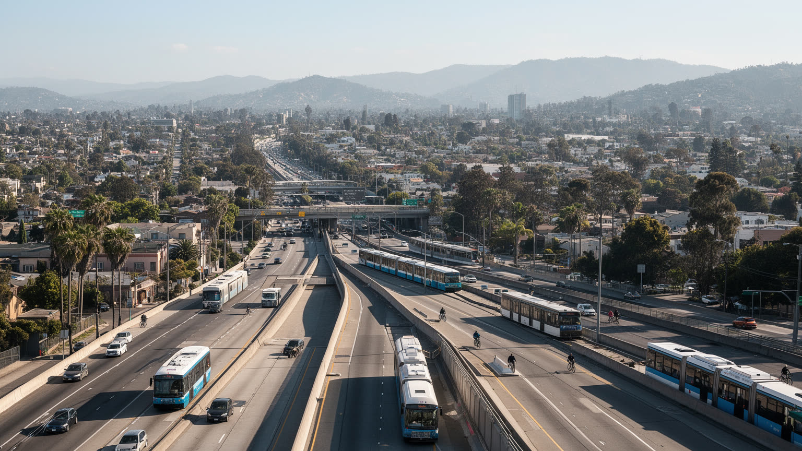
サンノゼの移動は、広い谷に伸びる高速道路、幹線道路、ライトレール、バス、カルトレイン、空港、自転車道によって組み立てられています。シリコンバレーの企業や住宅地は低密度に広がり、職場、学校、店、病院が離れているため、車を持てるかどうかが生活の自由を大きく左右します。通勤時間は住宅費と直結し、より安い家を求めてギルロイ、トレーシー、セントラルバレー方面まで移る人もいます。公共交通は重要ですが、目的地が分散しているため乗り換えと待ち時間が課題になりやすいです。ライトレール沿線や駅周辺に住宅を増やす政策は、車依存を減らす可能性がありますが、近隣の反対、建設費、家賃水準、駐車需要とぶつかります。空港は技術出張と観光に便利で、都心に近い一方、騒音と土地利用の制約もあります。自転車や徒歩で暮らしやすい地区は増えていますが、広い道路、暑さ、日陰不足、事故の危険が残ります。交通を読むことは、誰が短時間で通勤でき、誰が長い移動を強いられ、誰がバスの最終便に生活を合わせるのかを見ることです。サンノゼの課題は渋滞だけではありません。都市の広がり方そのものが、住宅、気候、労働時間、健康を結びつけています。駅前の密度を高め、歩道と日陰を整え、職場に近い手頃な住宅を増やすことは、交通政策であり住宅政策でもあります。谷をつなぎ直すには、道路容量だけでなく暮らしの配置を変える必要があります。
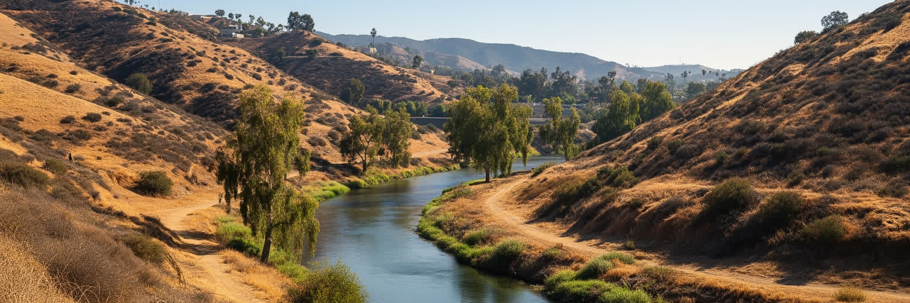
サンノゼの気候は、乾いた長い夏と穏やかな冬、湾から入る風、少ない雨によって形づくられます。過ごしやすい日が多いことは都市の魅力ですが、干ばつ、山火事の煙、熱波、水需要、洪水、海面上昇が同時に課題になります。サンタクララ谷の水は、地元の貯水池、地下水、州内の広域水系、節水政策に支えられ、住宅、工場、大学、公園、半導体関連施設、家庭菜園までをつなぎます。乾いた年には芝生、街路樹、農業の名残、産業用水の使い方が争点になります。熱波はエアコンのある家とない家、木陰の多い地区と少ない地区、屋内勤務と屋外労働の差を広げます。湾岸湿地は生態系であると同時に、高潮と洪水から都市を守る緩衝帯でもあります。山裾では火災リスクが高まり、煙は学校、屋外作業、医療、スポーツに影響します。気候対策は環境意識の表明だけでは足りません。断熱、日陰、涼める公共施設、節水型の景観、雨水管理、湿地再生、停電時の支援を日常の制度として整える必要があります。サンノゼの明るい空は、成長都市が水と熱の制約をどう受け止めるかを問い続けています。涼しさと水は、技術より先に生活を支える基盤です。気候リスクは所得差も映します。断熱の弱い部屋や木陰の少ない通りでは、同じ熱波でも負担が大きいです。水と暑さへの備えを公平に配ることが、都市の信頼を守ります。備えは近隣の安心を作る基盤です。
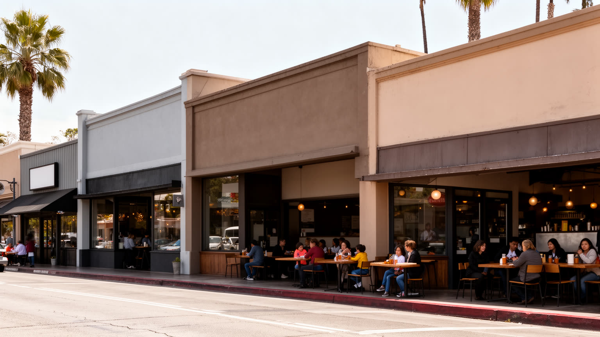
サンノゼの日常文化は、食をたどるとよく見えます。タコス、フォー、バインミー、インド料理、中華料理、フィリピン料理、韓国料理、ペルシャ料理、クラフトコーヒー、ファーマーズマーケットが、移民の歴史と現在の消費を結びつけます。食堂は観光客の目的地であるだけでなく、家族の経営、親族の労働、仕入れ、送金、地域の会話、宗教行事後の食事を支える生活の場所です。高所得の技術者が新しい店を増やす一方、長く続く小さな店は家賃、食材費、人手不足、再開発にさらされます。食文化の豊かさを守るには、写真映えする料理だけでなく、働く人が近くに住めるか、仕入れの市場が残るか、商店街の駐車や歩行環境が保たれるかを見る必要があります。祭り、学校の行事、教会や寺院の集まり、SharksやEarthquakesの観戦、ダウンタウンのライブやバー、週末の家族外食は、技術都市の硬いイメージを日常へ戻します。サンノゼの文化は大きな記念碑より、商店街の匂い、複数言語の会話、子どもを連れた食事、夜遅くまで働く厨房に現れます。食は移民都市の入口であり、同時に住宅費と労働条件の問題を映す鏡です。味の多様さを楽しむほど、その皿を支える人びとの生活条件も読む必要があります。Christmas in the Parkや地域フェスも重要ですが、日常の店が残ることはもっと重要です。普段使いの食堂が消えれば、多文化都市の厚みは観光用の表情だけになります。
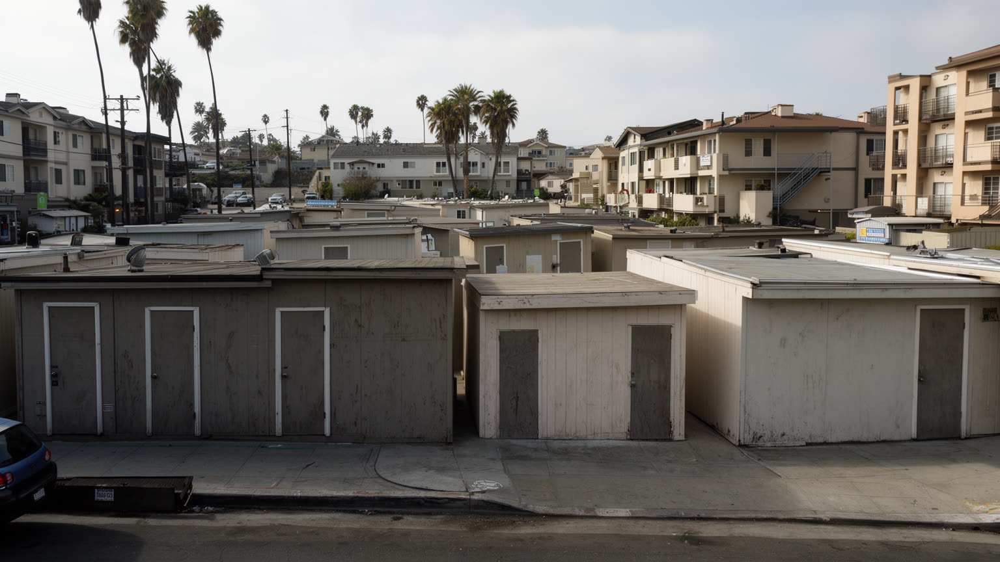
サンノゼは高い所得と税基盤を持つ一方、公共課題は重いです。ホームレス、車上生活、精神保健、薬物依存、学校資源の差、低所得家庭の食料不安、公共安全への不信、言語支援、若者の進路、高齢者の孤立が、豊かな技術経済のすぐそばにあります。都市財政は企業活動と不動産価値に支えられますが、住宅、交通、福祉、気候対策、道路修繕、図書館、公園、警察と消防を同時に支えるには常に選択が必要になります。公共空間では、誰が歓迎され、誰が排除されるのかが見えやすいです。公園で眠る人、図書館で涼む人、学校で朝食を受ける子ども、支援団体で通訳を待つ家族は、都市の成功を測る別の指標です。市民参加も所得や言語、勤務時間によって偏りやすく、会議に出られる住民の声だけで都市政策を決めると、夜勤者や移民家庭の生活が見えにくくなります。サンノゼの公共性は、技術で課題を解くという言葉だけでは成り立ちません。住宅支援、医療、学校、交通、近隣の信頼、行政の説明責任を積み重ねる必要があります。豊かな都市ほど、困っている人が見えない場所へ追いやられやすいです。だからこそ、公共サービスが誰に届いているかを街区単位で読むことが重要になります。市役所、図書館、学校、教会、支援団体が連携できるかは、危機時だけでなく平時の暮らしを左右します。公共の力は、見えにくい人へ届いた時に初めて測れます。
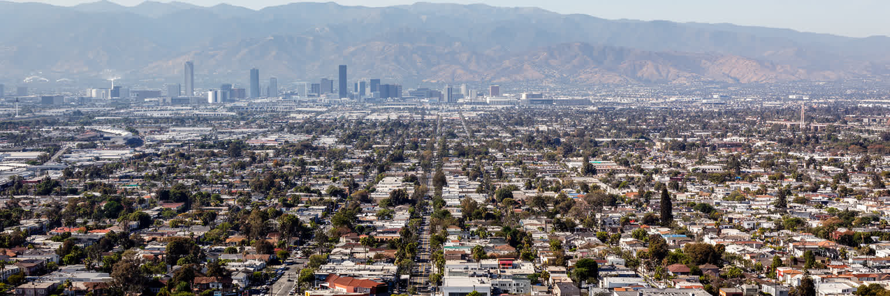
サンノゼを読むことは、シリコンバレーという言葉を実際の都市生活へ戻すことです。世界的な技術企業、半導体の設計、ベンチャー資本、大学人材は確かに重要ですが、それだけでは街は見えません。谷底の低層住宅、移民の市場、果樹園の記憶、都心の大学、空港、ライトレール、山裾の火災リスク、湾岸湿地、家賃に苦しむ世帯、長距離通勤する労働者を重ねると、都市の輪郭が立ち上がります。サンノゼの強さは、多様な人材と産業が集まり、世界へ技術を送り出す点にあります。一方で、その成功は住宅費、水、交通、公共サービス、文化の継続に強い負荷をかけています。創業の物語が未来を語るほど、現在そこで働き、学び、祈り、食べ、子どもを育てる人の条件を見なければなりません。果樹園から技術の谷へ変わった歴史は、変化の速さと土地の記憶の両方を示します。サンノゼは派手な観光都市ではありませんが、現代の都市経済が抱える希望と不平等を非常に濃く映します。世界的な技術の中心を理解する近道は、企業名ではなく、谷の地形、住宅地の家賃、移民商店の継続、公共交通の待ち時間、水の制約を同じ地図で読むことにあります。都市の未来は発明の数だけでは決まりません。住む場所、学ぶ場所、涼める場所、祈る場所、安く食べられる場所、試合や祭りや夜の音楽で集まる場所が残る時、技術の中心は生活の都市としても強くなります。